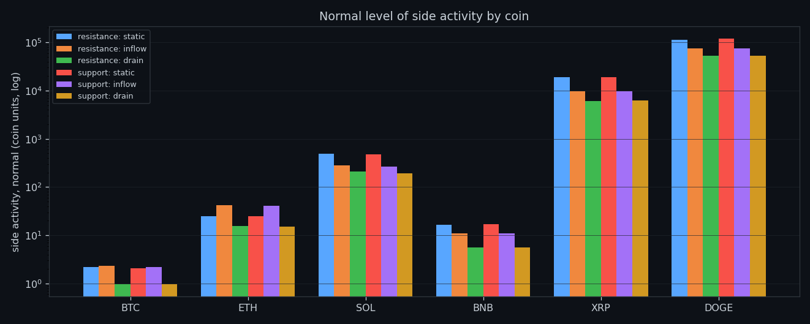
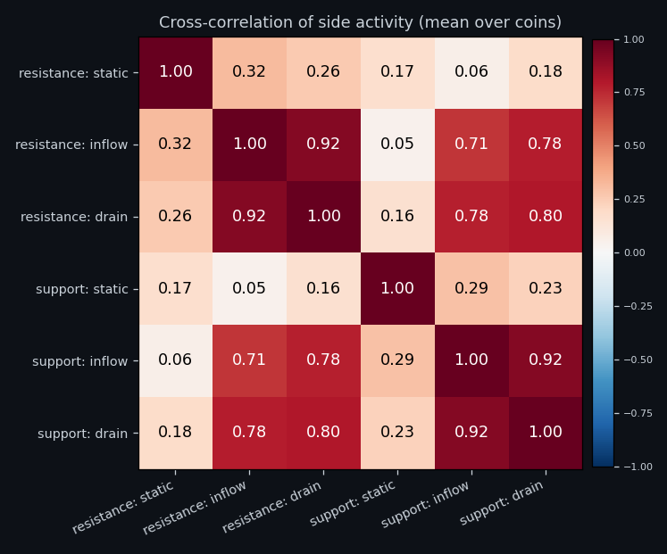
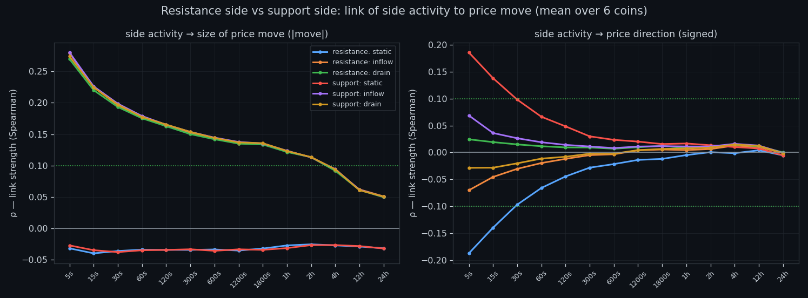
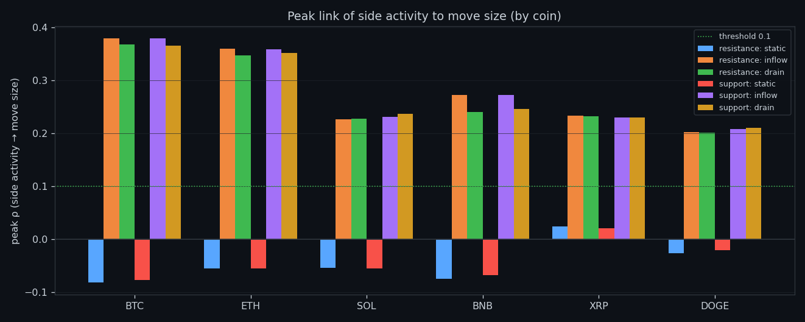
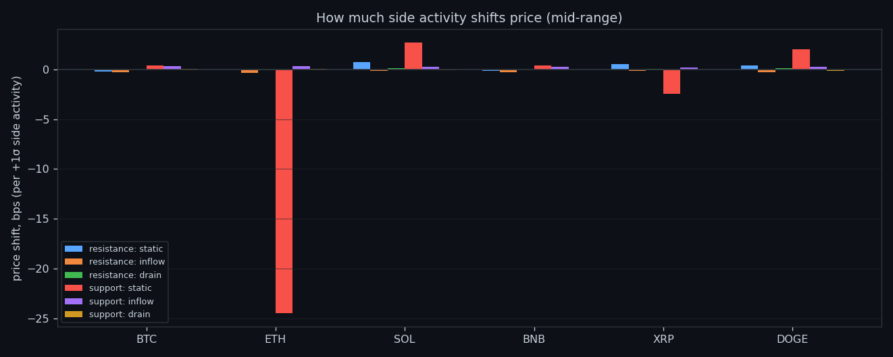
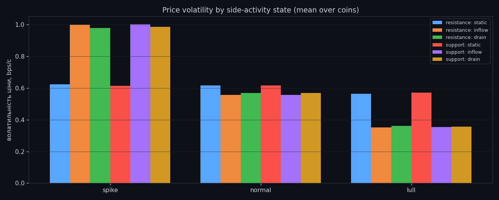
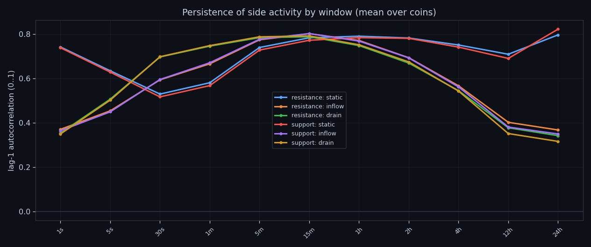
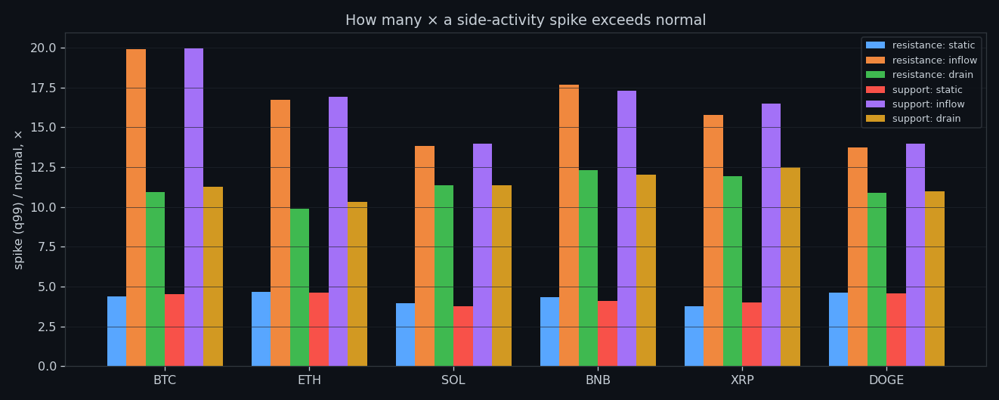

Side Against Side: Resistance and Support Compared
We put all six order-book features grouped into the resistance side and the support side into one study and asked how the pieces relate, which one leads, and what the combination predicts. Same boundary as always: it speaks about size, not side.
① The pieces, measured separately
This study looks at all six order-book features grouped into the resistance side and the support side. Before combining anything we show each component on its own scale, per coin — otherwise a composite hides which part is actually doing the work.

② How the pieces relate
Cross-correlation between the components, averaged over coins. The strongest pairs are buy-wall build-up vs buy-wall drain +0.92; sell-wall build-up vs sell-wall drain +0.92; sell-wall drain vs buy-wall drain +0.80. Numbers near zero matter as much as high ones: they say the two quantities carry independent information and can be combined without simply repeating each other.

③ Which one moves first
Lagged correlation answers the ordering question: when one component shifts, does the other follow, and after how long? Profiles that peak away from zero lag indicate a lead-follow relationship rather than a coincidence.

④ What the combination predicts
The same volatility sweep as in every study, now for the combined view: link strength against the size of the next move across horizons, per coin. As everywhere else, the usable signal sits at the short end and concerns magnitude.

⑤ Where it peaks
The best window per coin for the combined reading.

⑥ Impact per unit
Price impact per +1σ of each component, side by side — useful to see which piece carries the mechanical push and which is merely correlated with it.

⑦ States and transitions
Labelled states for the combined reading, and how they hand over to one another.

⑧ Memory of the combination
Autocorrelation of the combined reading by timeframe — the same stickiness we see in every single feature, preserved after combining.

⑨ Extremes
How far above normal the extremes of this combination run.
Research, not financial advice.

If this changed how you read the tape, the natural next step is Volume Is the Fuel — Not the Steering Wheel — We recorded the Binance order book every second for six coins over five months and ran eighteen tests on what volume really does.
Volume Is the Fuel — Not the Steering Wheel
We recorded the Binance order book every second for six coins over five months and ran eighteen tests on what volume really does.
About Market Research Lab — What We Collect and Why
Most market commentary is storytelling.
From Calm to Calm: a Standard for What Counts as a Signal (BTC)
We stopped defining market signals with a stopwatch.
The Wall That Goes Quiet: What Resting Liquidity Predicts
We measured resting limit liquidity sitting on both sides of the book second by second across six coins, and asked the only question that matters:….
Comments
Discussion is powered by GitHub. Enable it by adding secrets/giscus.json (repo IDs from giscus.app).